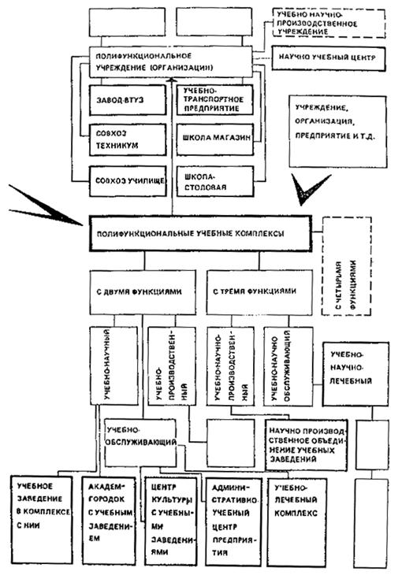
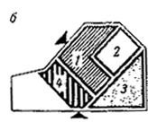
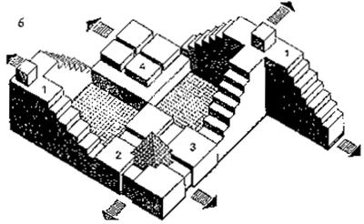
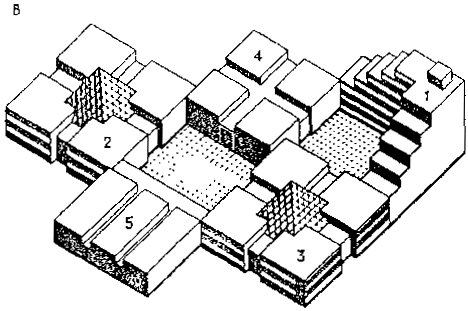
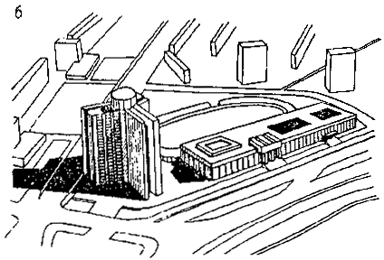
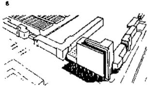

Центральный научно-исследовательский и проектный институт типового и экспериментального проектирования школ, дошкольных учреждений, средних и высших учебных заведений
(ЦНИИЭП учебных зданий) Госкомархитектуры
Справочное пособие к СНиП
Серия основана в 1989 году
Проектирование учебных комплексов и центров
Москва Стройиздат 1991
СОДЕРЖАНИЕ
Организационные предпосылки создания учебных комплексов. 7
2. ТРЕБОВАНИЯ К РАЗМЕЩЕНИЮ УЧЕБНЫХ КОМПЛЕКСОВ.. 9
3. ТРЕБОВАНИЯ К УЧАСТКАМ УЧЕБНЫХ КОМПЛЕКСОВ.. 15
Требования к проектированию отдельных зон. 21
4. ФУНКЦИОНАЛЬНО-ПЛАНИРОВОЧНЫЕ РЕШЕНИЯ.. 25
5. АРХИТЕКТУРНО-КОМПОЗИЦИОННЫЕ РЕШЕНИЯ.. 31
Приложение 1. ТЕРМИНОЛОГИЯ.. 40
Приложение 2 Примерный состав кооперированных комплексов учебных и общественных зданий 42
Настоящее справочное пособие разработано к СНиП 2.08.02-89 "Общественные здания и сооружения" на основе анализа и обобщения современного передового опыта формирования учебной сети и проектирования зданий профессиональных учебных заведений всех уровней образования - от учебно-курсовых комбинатов до институтов повышения квалификации.
Единство системы и преемственность всех звеньев образования - основной принцип, на котором базируется создание учебных комплексов. Единая система обучения является функционально-педагогической основой создания комплекса учебных заведений.
Широкое внедрение учебных комплексов и центров в дополнение к существующей системе разрозненных сетей учебных заведений направлено на преодоление разобщенности учебных заведений разного уровня образования и разной отраслевой принадлежности; эффективное сочетание отраслевого и территориального планирования подготовки и повышения квалификации кадров в территориально-производственных комплексах и промышленных районах, агропромышленных объединениях, крупных фирмах, а также в отдельных регионах и городах. Создание комплексов, как показывает отечественная и зарубежная практика, способствует повышению качества и преемственности обучения, концентрации капитальных затрат на строительство и экономии средств при возведении и эксплуатации учебных зданий.
Учебный комплекс рассматривается в настоящем пособии как специфический тип архитектурного объекта, формируемый путем функционально-архитектурного, территориального и организационного объединения нескольких учебных заведений одного или разных уровней образования с многообразными формами и степенью кооперации и являющийся крупным элементом объемно-пространственной композиции различных функциональных зон города.
Предполагаемая в результате демократизации образования гибкость форм и методов обучения приведет к расширению организационных структур и, следовательно, к расширению традиционной номенклатуры классических типов учебных заведений. Однако, при этом сохранятся стабильность отдельных функциональных элементов учебных заведений, их универсализация и унификация между разными ступенями образования. Это позволяет рекомендовать при проектировании учебных комплексов и центров использовать следующие пособия к СНиП 2.08.02-89: "Проектирование профессионально-технических и средних специальных учебных заведений и учебных комбинатов", "Проектирование высших учебных заведений и институтов повышения квалификации" (разработаны ЦНИИЭП учебных зданий Госкомархитектуры).
Кроме того, при проектировании учебных комплексов культуры и искусства следует использовать пособия, разработанные Гипротеатром Минкультуры СССР, а при проектировании спортивных и зрелищных залов - соответствующие пособия, разработанные ЦНИИЭП им. Б.С. Мезецева.
Настоящее пособие разработано ЦНИИЭП учебных зданий Госкомархитектуры (канд. архит. А.М. Гарнец, использованы материалы архитекторов В.И. Дядюк, Н.П. Малиночки, Д.А. Рождественского, О.П. Одинцовой, Н.К. Цукановой, В.П. Чукловой, Л.Е. Савиновой).
1.1. При проектировании зданий и сооружений учебных комплексов должны соблюдаться требования СНиП 2.08.02-89 "Общественные здания и сооружения". Термины, используемые в Пособии, приведены в прил.1.
1.2. Учебный комплекс может быть создан в различных формах:
объединение учреждений на функциональной основе или аналогичности обслуживающих систем;
создание единого руководства, осуществляющего планирование и управление группой учебных заведений;
объединение (кооперирование) технических и технологических служб и т.д.
Первая форма объединения, наиболее рациональная и перспективная, является и наиболее сложной по функциональной структуре, две другие формы являются частными случаями первой.
Необходимый состав учебных заведений, включаемых в учебный комплекс, определяется на основе предварительного сетевого расчета учебных заведений предприятия, региона или отрасли одного или разных уровней образования. Примерный состав учебных заведений в комплексах приводится в прил. 2.
Расчет конкретного количества учащихся или ученических мест (в дальнейшем употребляется единый термин - "расчетный контингент").
в учебных заведениях, включаемых в состав комплекса, следует проводить на основе соответствующих нормативных документов и отраслевых инструктивных материалов с учетом существующей сети учебных заведений.
1.3. В учебных комплексах обязательно триединство любого профессионального учебного заведения - учеба, практика, обслуживание, которые создают основу и формируют структуру каждого учебного комплекса. Модель показывает (рис.1), что семейство учебных комплексов представляет собой сложное разветвление, включающее несколько характерных номенклатурных типов. Исходя из этого, можно выделить два класса комплексов (см. рис.1);
монофункциональные учебные комплексы, имеющие в своем составе только учебные заведения в различном сочетании (группа I);
полифункциональные комплексы, включающие помимо учебных заведений, научные учреждения и производственные предприятия (группа II), а также обсуживающие предприятия (группа III).
Под учебной подразумевается вся совокупность помещений, связанных с теоретическим обучением - классы, кабинеты, лаборатории, лекционные аудитории, библиотека. Термин практика включает все помещения и сооружения, предназначенные для профессионального обучения и практических занятий (тренажеры, учебно-производственные лаборатории и мастерские, полигоны, цехи и участки). Под это понятие должны попадать: в отрасли культуры - концертные залы и аудитории консерваторий, учебные театры; в медицине - клиники; в педагогике - детские сады, школы и другие базовые учебные заведения. Функция обслуживания учащихся осуществляется в помещениях при крупных учебных комплексах - в зданиях питания, бытового и медицинского обслуживания, культуры и отдыха учащихся, к этой группе относятся и общежития.
Рис. 1. Структурная модель комплекса учебных заведений
1.4. Все многообразие форм кооперирования и степени объединения учебных заведений следует рассматривать в зависимости от их отношения к основной функции - учебе (рис.2).
Рис. 2. Классификация учебных комплексов
Типы учебных комплексов: 1 -практически допустимые;
2 - дополнительные
1.5. Монофункциональные отраслевые учебные комплексы объединяют учебные заведения разных уровней образования и повышения квалификации, но одной отрасли (рис.3). Их следует подразделять в зависимости от принадлежности кооперируемых учреждений на учебные комплексы ведомств и учебные комплексы крупных предприятий, производственных объединений.
1.6. Ведомственные учебные комплексы формируются из учебных заведений, готовящих специалистов одного ведомства для группы предприятий, учреждений определенного региона (области, района, города). К подобным комплексам относятся:
учебный комплекс культуры, объединяющий учебные заведения разного уровня образования, как, например, детская музыкальная школа, музыкальное училище и консерватория, где можно создать условия непрерывного совершенствования в избранной специальности и отбор наиболее одаренных учащихся;
учебно-педагогический комплекс, где на базе педвуза могут быть объединены детские сады, базовая школа, ПТУ, УПК, техникум. Кооперация вуза с указанными типами учебных зданий позволяет будущему педагогу проследить и изучить процесс воспитания человека на всех возрастных уровнях от яслей до техникума;
учебный комплекс торгово-бытового обслуживания, где целесообразно кооперировать, например, учебный комбинат, профтехучилище и техникум торговли;
агропромышленный учебный комплекс, объединяющий на общей базе учебного хозяйства (земля и техника) учебный комбинат, профтехучилище, техникум, кафедру вуза и т.д.

1.7. Кооперация учебных заведений на производстве в целях наиболее эффективного использования (во времени) материальной базы может осуществляться по двум основным направлениям.
Во-первых, объединение по принципу наибольшей общности помещений. Так объединяются здания близких по набору помещений учебных заведений, что дает наибольший экономический эффект. Во-вторых, по принципу общего руководства учебными заведениями одного предприятия. Это более доступно в смысле кооперации материальной базы.
В учебные центры предприятий в зависимости от размещения целесообразно включать:
при размещении в городе (при наличии санитарной защитной зоны) - дневные профессиональные учебные заведения, учебные заведения повышения квалификации с отрывом от производства;
при размещении на предзаводской площади - учебно-курсовой комбинат; школу рабочей молодежи; профтехучилище; филиалы, отделения или факультеты техникума и вуза; выпускающую кафедру вуза; возможно включение в состав учебного центра межшкольных мастерских и института повышения квалификации.
Учебные центры промышленных узлов должны формироваться по аналогии с учебными центрами промышленных предприятий, но без подразделений курсовой сети, которые следует размещать при отдельных предприятиях.
В учебных центрах производственных фирм, объединений, имеющих предприятия в разных городах, должен предусматриваться учебно-курсовой комбинат (обучение с отрывом от производства): техникум, завод-втуз, институт повышения квалификации.
1.8. Учебные комплексы, создаваемые путем кооперирования учебных заведений одного уровня обучения, но, как правило, разных отраслей производства, следует называть одноуровневыми. Ввиду разнохарактерности производственной базы комплексов ПТУ или техникумов в них можно объединить только группу наименее специфических общетеоретических помещений или совместно использовать помещения вспомогательного и обслуживающего характера (см. рис.2).
Рис. 3. Принципы функционального объединения учебных комплексов (внутреннее объединение).
а - учебные заведения одной отрасли (предприятия); б - учебные заведения одного уровня обучения; 1 - профтехучилище; 2 - техникум; 3 - вуз; I - группа общетеоретических и общетехнических помещений; II - группа специализированных учебных помещений; III - группа помещений учебных мастерских и спецлабораторий
1.9. При проектировании учебных комплексов или центров вместимость каждого учебного заведения может соответствовать номенклатурным показателям:
учебные комбинаты: 200, 400, 600, 900 ученических мест;
профтехучилища: 270, 360, 540, 720, 960, 1440 учащихся;
техникумы: 540, 720, 960, 1440, 1920 учащихся.
При узкой отраслевой специализации зданий агропромышленных хозяйств (комплексах животноводческих предприятий промышленного типа) максимальная вместимость агропромышленных учебных заведений - учебных центров и комплексов - 540 учащихся.
1.10. Величина учебных комплексов желательна в пределах от 1500 до 6000 учащихся, хотя для обслуживающих отраслей она может быть и ниже.
Наряду с преимуществами концентрации учебных заведений следует учитывать отрицательные моменты, сопутствующие дальнейшему укрупнению учебных комплексов.
1.11. Состав и количество помещений в учебном комплексе для учебно-теоретических и для учебно-практических занятий определяются технологическим расчетом с учетом степени функциональной кооперации учебных заведений данного комплекса, которая зависит от:
отраслевой принадлежности учебных заведений;
уровней обучения;
необходимости поэтапного ввода комплекса.
1.12. При определении величины, пропускной способности обслуживающих групп помещений в учебных комплексах (актового зала, столовой, библиотеки, здравпункта и т.п.) следует предусматривать очередность их использования, а также сменность занятий (для учебных заведений курсовой сети, для заочных и вечерних учебных заведений).
1.13. В полифункциональных комплексах учебные заведения объединяют с местами приложения труда или расширяют функцию помещений для практических занятий до функции производства, например, учебно-научные и учебно-производственные объединения и комплексы, учебно-культурные и учебно-лечебные комплексы и центры и т.д.
1.14. Полифункциональные комплексы наиболее целесообразны в обслуживающих отраслях народного хозяйства, где создаются учебно-обслуживающие, учебно-лечебные, учебно-культурные комплексы и центры, фактически находящиеся сразу в двух группах (учеба + производство) и (учеба + обслуживание).
Учебные заведения с учреждениями торгово-бытового обслуживания создают полифункциональный комплекс, в котором обслуживание населения является одновременно производством для персонала.
Центры культуры, в состав которых включаются учебные заведения культуры, значительно расширяют состав помещений, который используется населением - учебный театр, концертный зал, выставочные залы, а учащиеся включаются в обслуживание населения.
Многопрофильная клиническая больница не только центр высококвалифицированной помощи населению, но и база медицинского института или института усовершенствования врачей, центр подготовки среднего медицинского персонала, база для проведения различных научных исследований.
1.15. Учебный комплекс с точки зрения системного подхода рассматривается в пособии в нескольких аспектах. Среди них в организационном плане наиболее важны - учебно-сетевой, градостроительный, архитектурный и функциональный. Каждый из этих аспектов на разных этапах создания учебного комплекса приобретет значимость ведущего фактора, определяющего возможность формирования и функционирования учебного комплекса в соответствии с проектом.
Сетевой аспект следует учитывать при определении состава учебных заведений в учебном комплексе, градостроительный - при определении единого места строительства и решении генерального плана учебного комплекса и архитектурный - при разработке комплексного объемно-планировочного решения. Функциональный аспект приобретает главенствующее значение в период эксплуатации зданий.
1.16. Важнейшим условием создания учебных комплексов является опережающий расчет сети учебных заведений, планируемых к строительству в регионе, городе, для отрасли или для промпредприятий. Это поможет заказчику вовремя определить потребности в соответствующей материальной базе для подготовки и переподготовки кадров, а проектировщикам даст научно обоснованный материал для составления задания и программы на проектирование.
1.17. Проектирование учебного комплекса должно осуществляться на основе рационального решения учебной сети и двуединства в отраслевом или региональном аспекте.
Для создания комплекса учебных заведений (в сетевом аспекте) необходим единый заказчик на проектирование объекта в целом. Это позволит сконцентрировать в одних руках финансирование проектирования и строительства, которое иначе будет осуществляться из разных источников финансирования, а нередко и разновременно.
1.18. Для единого архитектурно-планировочного решения генерального плана учебного комплекса и его взаимосвязи с окружающей застройкой (градостроительный аспект) необходимо выделение генерального проектировщика, который совместно с заказчиком ведет подготовку задания на весь комплекс учебных заведений, а также контролирует реализацию градостроительного проекта на всех стадиях строительства.
1.19. Для комплексного решения планировочных и композиционных вопросов (архитектурный аспект) и увязки проекта учебного комплекса с архитектурой прилегающего городского района или предзаводской территории необходимо выделять наряду с генеральным проектировщиком также единого застройщика всех объектов учебного комплекса. Это позволит применить конструктивные и инженерные решения.
1.20. Для успешного функционирования построенного учебного комплекса (функциональный аспект) - как отдельных учебных заведений, входящих в состав комплекса, так и всего объекта в целом, - необходимо создание единого управляющего - генерального директора или координирующего органа - совета директоров.
Наличие системы единых служб - решающий фактор, предопределяющий создание учебных комплексов.
1.21. Разработке проекта учебного комплекса как сложного объекта предшествует обычно предпроектная работа, состоящая из двух этапов:
исследование и технико-экономические обоснования состава и величины учебных заведений, исходя из сетевого расчета, а также степени и формы их кооперации (территориально, функционально);
эскизные решения (на конкурсной основе) объемно-планировочной структуры учебного комплекса, в которых определяются архитектурные формы объединения в конкретных условиях строительства.
1.22. При проектировании учебного комплекса с учетом этапов его строительства и сдачи в эксплуатацию по так называемым "строительным комплексам" следует наряду с выделением стадийности строительства предусматривать в проектах схемы (сценарий) функционирования учебного комплекса и его элементов на всех этапах строительства.
1.23. Проектирование учебных комплексов в целях своевременной подготовки кадров должно вестись таким образом, чтобы строительство учебных зданий или первой очереди было закончено за год до начала выпуска продукции на соответствующем предприятии или до начала функционирования учреждений обслуживания. Это позволяет подготовить заранее необходимое количество эскплуатационников.
1.24. На стадии проектирования с целью преодоления отраслевой разобщенности при единой ведомственной подчиненности учебных заведений необходимо штатные структуры преподавателей и обслуживающего персонала в учебных комплексах приводить в соответствие с требованиями нового типа учреждения.
2.1. Рациональное размещение учебных комплексов следует определять на основе формирования единой сети учебных заведений как в масштабе региона или области, так и на территории города. Они должны иметь удобную связь с местами практической деятельности будущих специалистов, а их территорию следует решать в соответствии с требованиями СНиП 2.07.01.-89 к входящим в их состав учебным заведениям.
Требования к рациональному размещению учебных комплексов равнозначны как при определении места для нового строительства, так и при формировании комплекса на базе существующего учебного заведения путем реконструкции или расширения учебных зданий и участка.
2.2. При выборе места учебного комплекса в городе следует учитывать определенный ряд градостроительных и функциональных требований. Требования подразделяются на обязательные, выполнение которых является необходимым условием их проектирования, и дополнительные, соблюдение которых должно осуществляться при наличии благоприятной градостроительной ситуации и в развитие обязательных требований.
Обязательные требования при выборе места размещения учебного комплекса:
оптимальное приближение к учебно-практической базе;
наличие необходимого по площади участка с возможностью перспективного развития;
наличие или возможность создания удобной связи с городским транспортом;
создание оптимальных условий культурно-бытового обслуживания учащихся и сотрудников;
учет совместимости требований к размещению учебных заведений, составляющих комплекс.
Рис. 4. Размещение комплексов учебных заведений в структуре города
1 - сельскохозяйственного профиля; 2 - педагогического профиля; 3 - медицинского образования и физического воспитания; 4 - культуры и искусства; 5 - технического профиля; одного уровня обучения; 6 - техникумы; 7 - ПТУ; 8 - вузы
Дополнительные требования при выборе участка для учебного комплекса:
удаление более чем на 1 км от санитарной зоны промышленных предприятий, кроме учебных комплексов и центров промышленных отраслей;
удаление от жилой застройки, кроме учебных комплексов культуры и искусства;
выбор живописного местоположения (интересный рельеф, обилие зелени, наличие водоемов и т.п.) и приближение к зоне отдыха;
возможность соблюдения на выбранном участке санитарно-гигиенических условий, связанных с уровнем грунтовых вод, инсоляцией и др.
Рис. 5. Размещение учебных заведений, формирующих учебный комплекс промпредприятия
1 - профтехучилище; 2 - техникум (дневн.); 3 - техникум (веч.); 4 - учебно-производственный комбинат; 5 - учебно-курсовой комбинат (начальное обучение); 6 - учебно-курсовой комбинат (повышение квалификации); 7 - школа рабочей молодежи; 8 - УКП вуза; I - связь с городом; II - связь с производством; III - производственная практика; IV - производственное обучение
2.3. При организации комплекса в существующей застройке городского центра рекомендуется использовать такие апробированные меры по высвобождению необходимой для строительства территории, как укрупнение близлежащих кварталов, закрытие ряда проездов, снос малоценной застройки и т. п.
Когда представляется архитектурно целесообразным, а технологически - возможным, следует, как правило, объединять учебные комплексы с другими общественными зданиями, находящимися в зоне строительства.
2.4. Учебные комплексы, сформированные из учебных заведений одной отрасли, можно рассматривать как одно учебное заведение с расширенным возрастным составом учащихся. К размещению подобного учебного комплекса должны предъявляться требования, аналогичные предъявляемым к размещению отдельного учебного заведения.
Для учебных комплексов одного уровня образования, которые формируются, как правило, из учебных заведений разных отраслей, необходимо выбирать территорию, где совмещаются зоны рационального размещения каждого учебного заведения комплекса.
Принципиальная схема размещения в городе комплексов учебных заведений приведена на рис.4.
2.5. Важнейшим фактором, определяющим размещение учебных заведений промышленности, является их притяжение к производству, где осуществляется практическое обучение учащихся (рис.5). Поэтому задача размещения учебных комплексов данного типа должна решаться путем согласования противоречий между целесообразностью приближения к учебно-производственной базе и необходимостью удаления от промышленной зоны для соблюдения санитарно-гигиенических требований к функционированию учебных заведений.
2.6. Для промышленных производств V класса вредности, имеющих незначительные выделения вредных веществ или не имеющих их совсем (отдельные предприятия швейной, текстильной, электронной промышленности и др.), рекомендуется размещение учебных комплексов в самой промышленной зоне (рис.6). При этом целесообразно кооперировать учебные заведения с имеющимися на предприятиях научно-технической библиотекой, вычислительным центром, научно-техническим центром, научными подразделениями и т.п.
Целесообразно также создание единого общественного центра промышленного узла или комплексного производственно-селитебного района, где возможна более широкая кооперация, когда ряд учреждений, например, гостиница, здания бытового обслуживания могут включаться в состав так называемого учебно-общественного центра предприятия.
2.7. По отношению к предприятиям III - IV классов вредности (размеры санитарно-защитной зоны до 500 м) комплексы учебных заведений следует размещать на территории санитарно-защитной зоны между промышленной и селитебной зонами.
Комплексы учебных заведений упомянутых предприятий должны располагаться на пути основных потоков трудящихся от рабочего места к жилому району, причем пути движения не должны пересекаться транспортными магистралями. Располагать комплекс следует таким образом, чтобы зона его главного выхода имела непосредственную связь с предзаводской площадью или пешеходной аллеей, а расстояние от проходной не превышало 500 м.
2.8. Для рационального размещения комплекса необходим дифференцированный подход, при котором целесообразность приближения того или иного учебного заведения к промышленности определяется уровнем вредности производства и видом обучения (см. рис.6). По отношению к предприятиям I и II классов вредности (химия, металлургия, нефтепереработка) целесообразным является размещение учебного комплекса за пределами санитарно-защитной зоны на селитебной территории города (размеры санитарно-защитной зоны от 1 до 10 км), при этом место для учебного комплекса следует выбирать по возможности в радиусе пешеходной доступности от предприятия, но не более 1500 м от проходной.
Рис. 6. Примеры размещения учебных комплексов промпредприятий в зависимости от взаиморасположения промышленности и жилья
а – совместное расположение зон; б – разрыв между зонами до 1 км; в – разрыв между зонами более 1 км; I – промышленное предприятие; II – жилая зона; III – учебный комплекс
Выносимые из промузла заведения должны располагаться на основной транспортной магистрали, ведущей из промзоны в город - у границы жилого района с санитарно-защитной зоной или у первого пересечения с городской магистралью. При размещении учебных заведений промпредприятий на селитебной территории (общеобразовательный и общетехнический цикл обучения) необходимо стремиться к рациональной их кооперации с аналогичными городскими учебными заведениями. В ряде случаев существует функциональная связь учебно-курсовой сети с производством (технологический цикл обучения), тогда учебные заведения курсовой сети должны выделяться из учебного комплекса и размещаться на производстве в составе общественного центра. В случае необходимости на территории промзоны допускается размещать лишь базовые кафедры высших и средних специальных учебных заведений. Выбор места размещения в каждом отдельном случае должен быть связан с конкретной градостроительной ситуацией и согласован с общегородской учебной сетью (рис.7).
2.9. При размещении комплекса учебных заведений сельскохозяйственного профиля основным требованием является соблюдение условий рациональной организации базы практического цикла обучения, на основе которой целесообразно создание разноуровневых учебных заведений.
Следует стремиться к размещению учебного комплекса в центральной усадьбе совхоза или в поселке городского типа с высоким уровнем культурно-бытового обслуживания, объединяя идентичные подразделения обслуживания в учебном комплексе и поселке.
Необходимо учитывать возможность организации удобной транспортной связи с городом в пределах 40-50-минутной доступности.
2.10. При выборе участка учебного комплекса медицинского профиля следует учитывать необходимость его приближения к наиболее крупному медицинскому учреждению (или группе учреждений), с целью организации как можно большей части клинического фонда в непосредственной связи с учебой.
Учитывая перспективную направленность развития медицины на предупреждение заболеваемости, выявление ресурсов здоровья человека рекомендуется территориальная, а в отдельных случаях и архитектурно-функциональная кооперация медицинских вузов и медико-фармацевтических институтов с институтами физической культуры, при этом в городе образуется специализированная зона вузов здравоохранения и физической культуры.
2.11. Размещать учебно-педагогический комплекс следует в городе на периферии жилой зоны на участке, пригодном для дальнейшего расширения. При размещении на периферии в непосредственной близости от парковой зоны наиболее широко раскрываются возможности организации кооперированного комплекса, так как здесь значительно легче решаются задачи выделения территории для строительства. Максимальная плотность детского населения, присущая периферии вновь застраиваемых городов, в сравнении с их остальными частями, требующая школ и детсадов большей вместимости при наличии свободных территорий создает благоприятные условия для формирования учебно-просветительных комплексов, позволяющих иметь наиболее полный состав учебных заведений.
Рис. 7. Модель организации сети учебных заведении на группу промпредприятий
а - с санитарно-защитной зоной более 500 м; б - в пределах селитебной территории; 1 - учебный цех; 2 - учебный участок, 3 - учебный центр промпредприятия; 4 - учебный пункт; 5 - промпредприятие; 6 - учебный комплекс
2.12. Региональная организация учебно-практического процесса требует размещения учебных комплексов культуры и искусства в структуре города. При этом целесообразна кооперация учебных заведений с соответствующими им городскими культурно-просветительными учреждениями (библиотеки, театры, кинотеатры, музеи, выставочные залы, клубы, дома культуры и др.). Комплексы этого типа в отличие от других следует располагать в составе культурно-просветительного центра города, где находится основная масса культурно-просветительных учреждений, которые формируют культурный потенциал города.
Оптимальным вариантом его размещения является сложившийся культурный центр историко-архитектурной части города, или культурный центр с перспективой развития в новой городской застройке.
Для крупнейших городов возможно размещение комплекса в составе одного из общественных центров района, где также могут быть сосредоточены все необходимые для учебно-практической деятельности заведений культурно-просветительные учреждения.
2.13. Комплексы одного уровня обучения формируются, как правило, из учебных заведений разных отраслей, требующих специфического размещения. Место учебного комплекса должно определяться, как правило, наиболее крупным учебным заведением, на базе которого будут формироваться другие учебные заведения.
Комплексы профессионально-технических училищ (ПТУ) следует размещать вблизи промузлов или крупных предприятий, так как 70% городских ПТУ готовит кадры для промышленности, а ПТУ других отраслей не выдвигают каких-либо жестких требований к размещению в городе.
Комплексы средних специальных учебных заведений могут быть расположены в любой зоне города, но с максимальным приближением к своей практической базе.
При выборе местоположения комплексов следует учитывать необходимость приближения к общественному центру, что повысит уровень культурно-бытового обслуживания учащихся и сотрудников, так как при относительно небольшой величине комплексов данного типа (2 - 4 тыс. учащихся) специальное обслуживание для них на достаточно высоком уровне организовать нельзя, а в комплексе возможно создать полноценный центр обслуживания учащихся и жителей.
2.14. Комплексы вузов являются наиболее крупными среди остальных учебных заведений. Их величина, достигающая 15 - 20 тыс. учащихся и более, потребность в значительной территории и большое градообразующее значение требуют особого местоположения комплексов в городской структуре. Как правило, крупный комплекс вузов формирует целую учебно-научную зону города, куда включаются также и научно-исследовательские учреждения.
Как правило, университеты, ввиду своей большой величины, не нуждаются в кооперировании и сами превращаются в учебно-научный комплекс, сформированный несколькими НИИ и вузом.
Периферийное размещение комплекса позволяет использовать и другие преимущества размещения, такие, как возможность перспективного развития, природный ландшафт, возможность обособления и создания атмосферы институтской жизни.
Более подробно вопросы размещения вузов рассмотрены в справочном пособии к СНиП "Проектирование высших учебных заведений и институтов повышения квалификации".
2.15. При определении места строительства полифункционального комплекса следует руководствоваться как требованиями к размещению учебных заведений комплекса, так и входящих в его состав учреждений и предприятий. Приоритетными должны быть требования наиболее крупного объекта, формирующего полифункциональный комплекс. Тем более что объединение может быть лишь территориальное.
При формировании научно-учебного комплекса учебные заведения должны размещаться в зоне влияния научного учреждения, в том числе и в научных городках (академгородках), учебно-научные комплексы - в соответствии с требованиями к размещению учебного заведения.
Место учебно-производственных комплексов, а также всех типов учебно-обслуживающих комплексов в структуре города, должно определяться с учетом требований к размещению учреждения, входящего в состав полифункционального комплекса.
Полифункциональные учреждения, имеющие несколько равнозначных ведущих функций, должны размещаться с учетом требований, предопределяемых функциями "производство" (в том числе "обслуживание") и "наука".
3.1. Для оптимального функционирования учебных комплексов следует создавать функционально-планировочную организацию территории, которая бы удовлетворяла требованиям целесообразного решения всею комплекса при рациональном функционировании на территории каждою учебною заведения, отражала специфику кооперирования, а также учитывала общеархитектурные требования.
3.2. Следует соблюдать следующие функциональные требования к участкам учебных комплексов:
достаточность территории для строительства и резервирования на перспективное развитие;
четкое функциональное зонирование участка учебного комплекса;
функциональная законченность группы объектов на каждой очереди строительства с максимальной степенью удобства и возможно короткими связями между зданиями;
удобная взаимосвязь отдельных зон (по функциональным условиям).
Следует выполнять следующие проектные требования:
объемно-пространственная и архитектурная законченность композиции на разных этапах строительства по взаимосвязи с окружающими городскими территориями;
компактность планировки и максимальная концентрация сооружений на территории, в том числе по этапам строительства;
структурность построения системы зданий на участке учебного комплекса.
3.3. Проект генерального плана учебного комплекса должен решаться с учетом проекта детальной планировки окружающей застройки и учитывать очередность строительства. При этом элементы первой очереди строительства должны разрабатываться более детально. Это позволит обеспечить последующие оперативные преобразования здания и участка комплекса.
Проект должен содержать схемы функционирования учебного комплекса на всех этапах строительства, предусматривающие оптимизацию обслуживания учащихся и инженерное обеспечение комплекса на каждом этапе.
3.4. При проектировании генерального плана учебного комплекса и определения его функционально-планировочной структуры следует стремиться к рациональной интеграции основных функциональных зон, характерных для всех учебных заведений, а в крупных учебных заведениях - и функциональных подзон, перечень которых приведен в таблице. Необходимость кооперирования учебных зон определяется заданием на проектирование с учетом отраслевых принадлежностей учебных заведений. Варианты возможной степени кооперирования учебных комплексов приведены на рис. 8.
3.5. Учебные комплексы с расчетным контингентом учащихся менее 4000, как правило, делятся на функциональные зоны: учебную, спортивную, жилую, хозяйственную (для комплексов здравоохранения величина контингента не является определяющей).
На участках учебных комплексов с числом учащихся более 4000 основные зоны обычно дифференцируются на подзоны, которые приобретают функциональную значимость и самостоятельность.
При решении генерального плана следует стремиться к функциональной оптимизации территории учебного комплекса при максимальном объединении соответствующих функциональных зон его учебных заведений. Для учебных комплексов с числом учащихся более 4000 возможно создание единых подзон.
Интеграция функциональных зон учебного комплекса без четкого выделения отдельных зон на участке возможна для учебных комплексов (до 1000 учащихся), не имеющей ярко выраженной учебно-практической базы, а также при выделении отдельного участка для общежитий учащихся.
3.6. При числе учебных заведений комплекса не более трех все функциональные зоны следует проектировать едиными для всех учебных заведений. При большем числе учебных заведений следует учитывать величину контингента и принцип объединения учебных заведений.
3.7. Состав учебных заведений определяет форму объединения, которая имеет два варианта - кооперация учебных заведений по уровню обучения или по отрасли народного хозяйства (см. рис.2).
В первом случае в составе кооперированного комплекса могут быть объединены функции, которые не зависят от профиля учебного заведения и являются общими для всех заведений в составе комплекса. Это отдых, культурно-бытовое и медицинское обслуживание, занятия спортом во внеучебное время и др.
Во втором случае кооперирование может быть гораздо более развитым за счет отраслевой однородности учебно-производственных функций заведений, формирующих комплекс, что во многих случаях позволяет организовывать не только единые библиотеку, актовые залы, клубные, вспомогательные и административные помещения, но при особенно близком родстве профилей учебных заведений - и общие учебные помещения.
|
Учебное заведение |
Зона |
||||||||
|
учебная |
жилая |
спортивная |
хозяйственная |
||||||
|
Подзона |
|||||||||
|
учебно-теоретическая |
учебно-практическая |
общественная |
жилых зданий |
культурно-бытовых сооружений |
физкультурно-оздоровительная |
спортивных сооружений |
зеленых насаждений |
||
|
Учебный комплекс помещений (УКП) вуза, отделение вуза |
+ |
+ - |
- |
- |
- - |
- |
- - |
- |
- - |
|
Среднее специальное учебное заведение (ССУЗ) |
+ |
+ + |
0 |
+ |
+ 0 |
0 |
+ + |
0 |
+ - |
|
ССУЗ вечернее, сменное |
+ |
+ - |
- |
- |
- - |
- |
- - |
- |
0 - |
|
Профессионально-техническое училище (ПТУ) |
+ |
+ + |
0 |
+ |
+ - |
+ |
- + |
0 |
+ - |
|
ПТУ вечернее, сменное |
+ |
+ - |
- |
- |
- - |
- |
- - |
- |
0 - |
|
Учебный комплекс-комбинат (УКК) |
+ |
+ 0 |
- |
- |
0 - |
- |
- - |
- |
0 - |
|
Школа рабочей молодежи (ШРМ) |
+ |
+ - |
- |
- |
- |
- |
- - |
- |
- - |
Обозначения: "+" - зона и подзона обязательны; "0" - зона и подзона возможны.
Рис. 8. Классификация форм объединения и терминология (архит. А.М.Гарнец)
3.8. Площади территорий учебных комплексов определяются заданием на проектирование с учетом места расположения комплекса, состава учебных заведений и существующих нормативов по каждому типу учебного заведения. При этом размеры участков должны устанавливаться не по сумме площадей участков учебных заведений, входящих в комплекс, а исходя из общей численности учащихся в максимальную смену, т.е. расчетного контингента. Следует максимально интенсивно использовать при кооперировании однородные зоны, уменьшая суммарные размеры территории по сравнению с нормативными, за счет учета возможного несовпадения времени занятий и возможности соседних незагруженных зон.
3.9. При укрупненных расчетах величину требуемого участка учебной зоны можно определять по норме площади на одного учащегося расчетного контингента, равной 20-25 м.
На территории учебной зоны следует размещать учебные и административные здания, мастерские, клубные и актовые залы, столовую.
При контингенте учебного комплекса более 4000 учащихся, как правило, на генеральном плане в составе учебной зоны следует выделять:
подзону учебно-производственных или научно-производственных подразделений (в зависимости от вида учебного заведения);
подзону общественного назначения.
На участке подзоны общественного назначения следует размещать корпуса или подразделения административно-управленческого обслуживания, информационные службы, научно-технический центр, актовый и клубные залы и т.д.
При проектировании генерального плана комплекса учебных заведении одного уровня обучения, но различных отраслей народного хозяйства, учебную зону при любой численности учащихся в комплексе следует, как правило, дублировать для каждого учебного заведения.
3.10. Учебно-практическая подзона комплекса может выделяться на отдельный участок: в учебных центрах промпредприятий I-II категорий по санитарным нормам, в учебных комплексах агропромышленных объединений и ряде других.
Учебная зона учебных комплексов здравоохранения подразделяется на две подзоны - учебно-теоретическую и учебно-практическую, основу которой составляют клинико-поликлиническая подзона, размещаемая на территории учебного комплекса, а также городская клиническая зона, размещаемая в зависимости от планировочной структуры в различных частях города.
Научные подразделения крупных монофункциональных учебных комплексов, формирующие научную подзону, являются функционально едиными для теоретических и практических циклов обучения, и поэтому их следует размещать, как правило, между теоретической и практической подзонами учебной зоны.
3.11. Совместное размещение жилой и учебной зон в едином комплексе является наиболее рациональным, так как обеспечивает тесную взаимосвязь основных зон комплекса, исключает ежедневные нагрузки на транспорт, экономит городскую территорию и средства, позволяет избежать дублирования технических сооружений и предприятий культурно-бытового назначения.
3.12. Общую площадь жилой зоны, которая состоит из зданий общежитий и территории для отдыха комплекса, следует определять:
суммированием площадей жилых зон - для учебных заведений разного уровня образования;
по общему количеству проживающих в общежитиях - для учебных заведений одного уровня обслуживания.
Па территории жилой зоны специализированного учебного комплекса, как правило, размещаются общежития разных учебных заведений. Следовательно, зона формируется зданиями общежитий с учащимися разного возраста, что требует автономного расположения каждого здания, но с единым блоком обслуживания.
При организации жилой зоны одноуровневых учебных комплексов следует предусматривать максимальную кооперацию всех элементов, составляющих комплекс. При этом общежития всех учебных заведений могут объединяться в одном здании, что обосновывается и одинаковыми условиями проживания.
3.13. При числе проживающих более 4000 следует в составе жилой зоны выделить подзоны: жилых зданий, культурно-бытового назначения и физкультурно-оздоровительную.
Подзону культурно-бытового обслуживания, тяготеющую к месту проживания, следует создавать в основной функциональной зоне - жилья, так как их использование приходится большей частью на внеучебное время.
Подразделения культурно-воспитательного назначения (актовый, клубный, конференц-залы) и блок питания, входящие в состав зоны общественного назначения не зависят от профиля учебных заведений.
Такие подразделения целесообразно объединять на территории в единый комплекс зданий, блокируемый с самостоятельными учебными зонами учебных заведений, входящими в состав учебного комплекса.
Рис. 9. Зонирование территории отраслевых учебных комплексов
а - размещаемых в городе (учебный центр лесопромышленного комплекса, г. Усть-Илимск; ЦНИИЭП учебных зданий, архитекторы М.А.Красников, А.Михе, Т.В.Виноградова, А.Ю.Харкеевич, С.Ф.Наумов); б - размещаемых в производственной зоне (учебный центр Чугунолитейного завода, г. Ярцево; Гипропрос, архитекторы В.В.Щербаков, И.Я.Фридман, Ю.В.Мочалов, А.В.Кубочкин); в, г - принципиальные схемы зонирования участков; 1 - учебная зона; 2 - спортивная зона; 3 - озеленение; 4 - жилая зона; 5 - культурно-бытовая зона
3.14. Целесообразна полная кооперация в любом многофункциональном учебном комплексе жилой и спортивной функциональных зон, так как функции жилья, быта, отдыха и занятий спортом в различных учебных заведениях не имеют принципиальных отличий (рис.9).
Рис. 10. Частичное функциональное кооперирование отраслевых учебных комплексов:
а - учебный комплекс химико-металлургической отрасли, г. Калуш УССР; ЦНИИЭП учебных зданий, проектное предложение, архит. А.М.Гарнец; б- Схема зонирования участка: 1 - техникум; 2 - зона мастерских; 3 - спортзона; 4 - культурно-бытовая зона; 5 - ПТУ, учебный комбинат; 6 - Дом знаний; в - учебный центр нефтехимического комбината, г.Тобольск; ЦНИИЭП учебных зданий, проектное предложение, архитектор Э.П.Путинцев; г - схема зонирования участков: 1 -профтехучилища; 2 - техникум и филиал вуза; 3,4 - общежития учащихся и студентов; 5 - спортзона; 6 - озеленение

Рис. 11. Генплан административно-общественного центра предприятия с учебным центром, г. Днепропетровск; ЦПИИЭП учебных зданий, проектное предложение, авторы А.В. Анисимов, А.М. Гарнец, С.Ф. Наумов
а - генплан; б - схема зонирования территории; 1 - учебная зона; 2 - спортивная зона; 3 - озеленение; 4 - культурно-бытовая зона
3.15. Физкультурно-спортивные сооружения учебных заведений, входящих в состав комплекса, следует объединять в единую спортивную зону и размещать в наиболее благоприятной части территории, примыкающей к озелененным участкам, или связанной с озелененными пешеходными коммуникациями (рис.10). Количество сооружений спортивной зоны определяется их пропускной способностью на расчетное число учащихся, занимающихся спортом.
Набор открытых спортивных площадок на группу учебных заведений в учебных комплексах определяется заданием на проектирование.
3.16. При значительных размерах территории учебного комплекса наряду с выделением функциональных зон и подзон проект комплекса следует решать как многоцентровую композиционную структуру с выделением входной зоны, учебных подзон, зоны общественного обслуживания, рекреационной зоны и т.д.
3.17. При проектировании генеральных планов предзаводских территорий участок учебного комплекса следует рассматривать как подзону административно-общественного центра (АОЦ) предприятия, в состав которой должны входить корпус административно-управленческого назначения, инженерный корпус, конференц-зал, научно-техническая библиотека и т.д.
Учебная подзона в составе АОЦ вместе с другими зонами организуют главную предзаводскую площадь. В этом случае функциональные зоны учебного комплекса следует по возможности кооперировать с соответствующими функциональными зонами предзаводской территории (рис.11 и 12).
Рис. 12. Предзаводская зона ВАЗ в г. Тольятти, Промстройпроект, Гипрозапрос
1 - учебный центр; 2 - административный центр; 3 - ПТУ; 4 - медицинский центр; 5 - музей; 6 - мастерские; 7 - автотрек
4.1. Состав помещений учебных комплексов и требования к их проектированию следует принимать в соответствии с перечнем учебных заведений, формирующих комплекс. В отраслевых учебных комплексах следует стремиться к объединению однородных по функции групп помещении (рис.13).
Проектирование зданий учебных комплексов должно вестись с учетом интеграции видов и уровней обучения, а следовательно - путем кооперации идентичных групп учебных помещений, их универсализации по оборудованию и унификации по планировочным параметрам. Это должно предопределить мобильность и приспособляемость здания к видовым и количественным изменениям в процессе функционирования учебного заведения.
Рис. 13.Функциональная классификация и степень взаимосвязи групп помещений учебных комплексов
I - блокировка, объединение помещений; II - интеграция функций;
- полное объединение помещений; - то же, частичное; - автономное использование помещений
4.2. В отраслевых учебных комплексах, объединяющих учебные заведения разных ступеней образования, желательна кооперация помещений для теоретических занятий всех учебных заведений комплекса. Эти помещения следует группировать по кафедральному принципу, создавая блоки или группы помещений по предметам - предметные секции.
Предметную секцию рекомендуют разделять на универсальную мобильную зону и специализированную статичную зону. Исходя из этого, предметная секция может состоять из:
учебных помещений для лекционных и фронтальных форм занятий;
учебных помещений, для семинарских и лабораторно-практических занятий (занятия групповые);
учебно-практических (производственных) помещений, помещений для тренажеров, макетов и имитаторов производственной среды (занятия - бригадные и индивидуальные).
4.3. При размещении учебных заведений профессионального обучения рабочих в комплексе с другими учебными заведениями следует, как правило, предусматривать кооперированные учебные мастерские.
Помещения учебных мастерских и полигоны учебных комплексов рекомендуется кооперировать с соответствующими помещениями и зонами производства (мастерскими, фермами, теплицами и др.).
Если в состав учебного центра входят профтехучилище, учебно-производственные мастерские, следует рассчитывать по числу учащихся ПТУ на односменную работу. Во вторую смену будут заниматься учащиеся техникумов и учебного комбината.
4.4. В крупных учебных центрах, где организуется обучение трудящихся для группы предприятий, отрасли или экономического района, следует дополнительно иметь в составе подразделений расширенный методический кабинет с киностудией учебных фильмов и печатно-множительный цех.
При создании в учебном комплексе АСУ необходимо предусмотреть диспетчерскую площадью 36 м2.
4.5. Подразделения культурно-воспитательного назначения (актовый, клубный, конференц-залы) и блок питания, входящие в состав зоны общественного назначения не имеют зависимости от профиля учебных заведений. Поэтому на группу учебных заведений или в составе учебного комплекса следует, как правило, предусматривать единые учреждения и предприятия культурно-бытового обслуживания, состав и вместимость которых определяется заданием на проектирование.
В учебных центрах предприятии, размещаемых рядом с производством, возможна кооперация соответствующих групп помещений учебного центра и предприятия (рис.14).
При определении величины, пропускной способности обслуживающих групп помещений - актового зала, столовой, библиотеки, здравпункта и т.п. следует предусматривать очередность их использования, а также сменность занятий (для учебных заведении курсовой сети, для заочных и вечерних учебных заведений)
4.6. Полная кооперация групп помещений общественно бытового обслуживания в учебных комплексах (учебно-спортивные и актовые залы, клубные помещения, стоповые, здравпункты) целесообразна при общем континенте до 3 тыс. учащихся (например, для комплекса профтехобразования).
В крупных учебных комплексах на 5-6 тыс. учащихся совместно может использоваться лишь часть элементов учебно-вспомогательного назначения: плавательный бассейн, профилакторий, клуб и т.п.
Хотя любое учебное заведение относится к "закрытым" учреждениям, т.е. предназначенным для специфического контингента, ориентированного на данное учреждение, в учебном комплексе содержатся функциональные элементы учреждении открытой сети - питание, культура. Крупные учебные комплексы имеют значительные по объему элементы культурно-бытового обслуживания учащихся, поэтому следует объединять их с учреждениями обслуживания населения в единые комплексы или специализированные учреждения обслуживания, которые могут образовать самостоятельную группу кооперированных комплексов (рис.15).
Рис. 14. Возможные направления кооперации отдельных групп помещений учебного центра промпредприятия
РП - рабочие предприятия
4.7. Расчет книжного фонда, числа читательских мест и состав помещений в учебных комплексах определяются заданием на проектирование.
При кооперировании учебных комбинатов и институтов повышения квалификации и подразделений высших учебных заведений с различными учреждениями состав и площади библиотек устанавливаются заданием на проектирование с учетом их совместного использования.
4.8. При проектировании предприятий общественного питания на группу высших учебных заведений одну из столовых следует, как правило, проектировать как столовую-заготовочную с развитыми группами производственных и складских помещений, обеспечивающими производство полуфабрикатов для остальных предприятий.
4.9. В учебных комплексах, а также при кооперировании учебных комбинатов, подразделений высших учебных заведений и институтов повышения квалификации с другими учреждениями или зданиями состав и площади помещений медицинского обслуживания устанавливаются с учетом совместного использования по суммарной численности обслуживаемого контингента.
4.10. Наличие системы единых управленческих служб - решающий фактор, предопределяющий создание учебных комплексов.
Рис. 15. Схема функциональной взаимосвязи групп помещений в проекте ЦНИПЭП учебных зданий учебного комплекса НПО "Курскрезинотехннка"
1 - обучаемые; 2 - посетители; 3 - взаимосвязь помещений; 4 - обмен преподавателями; 5 - технологическая связь
Рис. 16. Примеры кооперации основных учебных комплексов промпредприятий
а - автономное размещение учебного комплекса; б - объединение учебного комплекса с административным центром; в - объединение учебного комплекса с общественным центром; АДМ - административный комплекс; У - учебный комплекс; ОК - общественный комплекс; А - административно-управленческие помещения; Б - библиотека; М - медпункт; П - учреждения питания; С - спортпомещения; 1 - промпредприятие; 2 - жилая зона
В связи с этим желательно, чтобы к заданию на проектирование учебного комплекса заказчик представил проектной организации, в зависимости от конкретных условий, дополнительные исходные данные:
организационную структуру комплексного учебного заведения;
требования по управлению учебными процессами и вспомогательными службами, включая уровень диспетчеризации и АСУ;
уровень оснащения техническими средствами обучения с применением стандартных комплектных устройств отечественного и зарубежного производства.
4.11. На стадии проектирования с целью преодоления отраслевой разобщенности при единой ведомственной подчиненности учебных заведений; необходимо штатные структуры преподавателей и обслуживающего персонала в учебных комплексах приводить в соответствие с требованиями нового типа учреждения. Новые штатные структуры являются основанием для определения дополнительных помещений. Площади таких помещений устанавливаются по нормам на соответствующие учреждения.
4.12. В учебных центрах крупных предприятий и промузлов полный состав помещений или групп помещений может быть изменен за счет переноса или объединения их с аналогичными помещениями предприятий (рис.16).
4.13. В архитектурную концепцию учебного комплекса следует закладывать идею архитектурного развития сооружения. Для крупных комплексов может осуществляться фронтальное, линейное и ландшафтное развитие (рис.17).
Рис. 17. Варианты объемно-планировочного развития учебного комплекса
а - фронтальное, б - линейное, в - ландшафтное; НР - направление развития; I, II, III - I, II и III очереди строительства
4.14. При включении в полифункциональный комплекс учреждений обслуживания их следует объединять с учебными зданиями переходами, вестибюлями, системой внутренних двориков в единые архитектурные комплексы с выделением самостоятельной зоны для посетителей (обслуживаемого населения).
5.1. Архитектурная концепция учебного комплекса в целом может быть создана средствами, подчеркивающими специфику функции того или иного структурного элемента. Это должно найти свое отражение в объемно-пространственном решении зданий, учитывающем специфические особенности организации учебного процесса.
Условия формирования объемно-пространственной композиции учебных комплексов имеют четкую систему архитектурных требовании, в которых Можно выделить три уровня рассмотрения объекта:
архитектурно-планировочный, требующий решения генерального плана участка (его композиции) во взаимосвязи с планировочной структурой города;
объемно-пространственный, требующий композиционной целостности и взаимосвязи зданий учебного комплекса на основе объемно-композиционного единства с окружающей застройкой;
архитектурно-художественный, на котором рассматриваются художественное и стилистическое единство, эстетический облик и масштабность зданий учебного комплекса в целом и решение отдельных, чрезвычайно контрастных по своим функциям частей комплекса - от учебных помещений и помещении зрелищного и спортивного характера до цехов промышленного типа и бытовых помещений - во взаимосвязи с элементами окружающей застройки.
5.2. При проектировании учебных комплексов следует учитывать следующие условия:
проекты учебных центров должны предусматривать дальнейшие структурные изменения в системе образования и в составе учебных заведений;
объемно-планировочное решение учебных зданий должно быть компактным, учитывать возможность будущего расширения и объединения с другими учреждениями;
при размещении учебных комплексов в общественных центрах промузлов следует по возможности объединять общие группы помещении (рис.18).
5.3. Единство архитектурного проекта учебного комплекса должно основываться на максимальной унификации конструктивных, планировочных и объемных решений и объединений групп помещений по признаку общности указанных параметров.
При проектировании учебных комплексов следует по возможности группировать помещения с одинаковыми параметрами и конструктивными решениями.
5.4. Рекомендуется, как правило, предусматривать помещения универсального назначения, что обеспечит функциональную гибкость и вариантность использования отдельных групп помещений. Учебное здание должно удовлетворять требованиям:
предприятия, определяющего на каждый период времени количество и профиль обучаемых специалистов;
современной педагогики, совершенствующей методы и формы обучения;
технического прогресса, изменяющего содержание труда, а, следовательно, и требования к квалификации специалиста, объему его знаний и перечню необходимых специальностей.
5.5. Следует стремиться к компактному решению учебного корпуса, объединяющего несколько учебных заведений. При этом следует учитывать функциональную автономию учебных заведений (главным образом по тем помещениям, которые не могут быть объединены, или при разноотраслевых учебных заведениях). Примеры функционального членения единого корпуса даны на рис.19.
5.6. Учебные комплексы в зависимости от конкретных особенностей градостроительной ситуации, величины и объемно-пространственного решения административно-общественного центра промпредприятия, решают одним из двух приемов формирования учебных комплексов: самостоятельными или входящими в застройку общественного центра предприятия в виде соподчиненного элемента (см. рис.16).
 
Рис. 18. Варианты композиционного решения учебного центра торгово-бытового обслуживания (архит. Н.К.Цуканова)
а - территориальное объединение ПТУ и техникума; б - организационное объединение ПТУ и техникума; в - функциональное объединение ПТУ и учебного комбината; 1 - учебно-теоретические помещения; 2 - помещения спецдисциплин; 3 - учебно-производственные мастерские; 4 - помещения культурно-бытового обслуживания учащихся; 5 - помещения бытового обслуживания населения учащимися
Рис. 19. Размещение учебных заведений в компактном здании учебного комплекса
а - смешанное; б - поэтажное; в - секционное; г - лучевое; 1- вечерний техникум; 2 - школа рабочей молодежи; 3 - учебно-курсовой комбинат
Кооперация учебного комплекса с учреждениями административной зоны предопределена как самой функциональной структурой учебного комплекса, имеющего группы помещений, аналогичных учреждениям обслуживания трудящихся, так и организационной структурой предприятия.
5.7. Прием самостоятельного расположения учебного комплекса следует применять в проектах предзаводских зон крупных предприятий, когда создаются специализированные комплексы, составляющие административный центр предприятия. Причем возможны два варианта взаиморасположения учебных зданий и пешеходных магистралей, которые условно можно назвать параллельным и перпендикулярным. В первом, наиболее распространенном, учебный комплекс располагается параллельно пешеходной магистрали. Перпендикулярное решение предполагает размещение учебного здания на пути основного потока трудящихся, что достигается включением проходной в это здание, в другом случае учебный корпус может фланкировать трассу. Это сокращает затраты времени на путь к учебному зданию.
Рис. 20. Зависимость архитектурно-композиционного решения здания учебного комплекса от моста расположения
а - учебный комплекс на предзаводской территории (учебный центр ВАЗа, Г. Тольятти; Гипропрос, архит. А.П.Голощапов, Г.П.Собельман); б - учебный комплекс в селитебной зоне (комплекс профтехучилищ (г.Ленинград). ЛенНИИпроект, проектное предложение, архит. Л.К.Фешина)
5.8. Учебные центры, размещаемые на предзаводских площадях или в предзаводских зонах, становятся формирующими элементами застройки. В этом случае их композиция требует достаточно крупного решения, которое может удержать большое пространство площади или протяженной магистрали. Здесь концентрация функциональных элементов учебных комплексов должна достичь наибольшей степени (рис.20,а). Одновременно в проектах следует учитывать необходимость постепенного перехода в архитектурном решении от индустриального масштаба к человеку, переключения масштабного восприятия архитектурного окружения.
5.9. В отличие от объектов, размещенных в промышленной зоне и решаемых крупными массами, при размещении учебного центра в селитебной зоне города его архитектура должна отражать особенности окружающей застройки и быть соразмерна с жилыми домами, учитывать особенности ландшафта, организацию транспортных и пешеходных связей и другие градостроительные факторы. Облик учебного комплекса, расположенного непосредственно в селитебной зоне, должен рассчитываться на восприятие с близкого расстояния, преимущественно зрителями-пешеходами, поэтому и решаться более локальными средствами - деталями зданий, четко установленными соотношениями объектов и форм в замкнутом, плотно застроенном пространстве (рис.20,б).
5.10. При наличии в специализированном учебном комплексе развитой группы учебно-практических помещений, обогащающих функцию обслуживания населения, а также в полифункциональных комплексах культуры, здравоохранения и торгово-бытового обслуживания - учреждений обслуживания населения следует в проекте комплекса предусматривать композиционную самостоятельность групп помещений, используемых населением. Эта группа помещений должна быть архитектурно выражена наиболее активно для облегчения ориентации посетителей в сложном полифункциональном объекте. С учетом этого требования должна быть решена и территория перед зданием, с выделением направления движения и применения малых форм в первую очередь для посетителей учреждений обслуживания.
5.11. В проектах учебных комплексов следует учитывать:
дальнейшие структурные изменения в методике обучения и составе учебных заведений путем максимальной унификации планировочных и конструктивных параметров;
возможность последующего расширения или развития учебного комплекса.
С этой целью в архитектурную концепцию учебного комплекса следует закладывать идею архитектурного развития сооружения с использованием повторяющихся композиционных элементов (рис.21).
5.12. Учебные комплексы - крупные по своим масштабам объекты - приобретают все большее центроформирующее значение для городской застройки. Поэтому наряду с необходимым учетом функциональной специфики, определяющей требования к объемно-пространственной организации и архитектуре, следует;
предусматривать органическое включение учебных комплексов в систему городских ансамблей, в архитектурную среду города или промрайона;
учитывать их взаимосвязь с общегородским центром, другими общественными центрами города;
предусматривать обязательную связь с пешеходными коммуникациями и остановками общественного транспорта (рис.22).
Рис. 21. Композиция, учитывающая поэтапное развитие учебных запедепий
а - построение корпусов с использованием унифицированных блок-секций (учебный центр Калужского химико-металлургического комбината - ЦНИИЭП учебных зданий, проектное предложение, архит. А.М. Гарнец); б - применение унифицированных блок-секций с внутренними дворами (учебный комплекс электротехнических предприятий, г. Минусинск, Гипропрос, проектное предложение, архитекторы С.Н. Гринев, А.Н. Голощапов, А.В. Мочалов, . А.М. Гарнец); в - повторение сложных по объемному решению блоков (ученый центр Авиапромышленного комплекса, г. Ульяновск, Гипропрос, архитекторы Г.И. Собельман, Е. Владимиров, Г.И. Звездина)
1 - блок ПТУ; 2 - блок техникума; 3 - блок учебного комбината; 4 - блок УКП вуза; 5 - блок учебного комбината, вечерней школы, УКП вуза; 6 - типовой корпус техникума; 7 - учебные мастерские; 8 - блоки культурно-бытового обслуживания


Рис. 22. Доминантное расположение учебных заведений
а - завершение центральной магистрали (учебный центр завода Атоммаш, г. Волгодонск, Гипропрос, архитекторы Ю.Н. Малов, Э.В. Смолин); б - оформление развилки двух улиц (учебный центр Метростроя, г. Москва, Моспроект, мастерской №17, архитекторы Р. Кананин, Г.Г. Пахомов, В. Устинов, Г. Боженскова, А. Березникова); в - организация перекрестка (учебный центр ГПЗ-1, г. Москва, Гипропрос, проектное предложение, архитекторы Г.Н. Лапир, М.Е. Рыжков, Б.В. Тихонов)
Рис. 23. Композиционное соподчинение учебных подразделений и общественно-административных центрах промпредприятий
а - административно-общественный центр предприятия, г.Днепропетровск, ЦНИИЭП учебных зданий, проектное предложение; б - административно-учебный центр Черниговского завода автотракторных прицепов, Гипропрос, проектное предложение; 1 - корпуса с учебными помещениями; 2 - корпуса с административными и общественными помещениями (архитекторы А.Н. Голощапов, М.И. Десятников, А.М. Стойлик)
5.13. Архитектурное решение полифункциональных комплексов должно строиться на композиционном единстве всех составляющих, образующих комплекс. При включении учебного комплекса в административно-технический центр предприятия группы учебных помещений целесообразно располагать в корпусах, размещаемых в зеленой зоне в удалении от основных транспортных магистралей (рис.23).
Примеры оптимального включения учебных подразделений в лечебный и культурно-просветительный полифункциональные комплексы приведены на рис.24.
Рис. 24. Архитектурно-функциональное решение городских полифункциональных комплексов
I - клиническая больница "Гайльэзерс" с медицинским училищем, г. Рига, архитекторы А. Урвиньш, В. Кадырнов, II - центр искусств "Барбикен" с учебными заведениями, г. Лондон, Великобритания; а - общий вид; б - схема 2-го уровня; в - схема 3-го уровня; г - схема 5-го уровня; д - схема 8-го уровня; 1 - музыкальная школа; 2 - театральная школа; 3 - консерватория; 4 - театр; 5 - концертный зал; 6 - главное фойе; 7 - ресторан; 5 - зал скульптуры; 9 - галерея искусств; зоны: УЗ - учебных заведений; ПСИ -помещений совместного использования; ГУК - городских учреждений культуры
1. Общие термины
УЧЕБНЫЙ КОМПЛЕКС - функциональное, архитектурное, организационное или территориальное объединение зданий нескольких учебных заведений одного или разных уровней образования с различными формами и степенью их кооперации. Часто применяется термин УЧЕБНЫЙ ЦЕНТР для названия одной из разновидностей отраслевого учебного комплекса, как правило, с четко выраженной ведомственной принадлежностью производства.
МОНОФУНКЦИОНАЛЬНЫЙ УЧЕБНЫЙ КОМПЛЕКС - комплекс зданий и сооружений, формируемый учебными заведениями на основе единства функции обучения.
ПОЛИФУНКЦИОНАЛЬНЫЙ УЧЕБНЫЙ КОМПЛЕКС - комплекс общественных зданий, в котором учебное заведение равноправно и взаимосвязано включено наравне с другим учреждением (например, учебно-культурный, учебно-лечебный, учебно-производственный, учебно-научный комплексы и т.п.).
ОДНОУРОВНЕВЫЙ УЧЕБНЫЙ КОМПЛЕКС - объединение нескольких учебных заведений одного уровня обучения по территориальному или функциональному признаку.
ОТРАСЛЕВОЙ УЧЕБНЫЙ КОМПЛЕКС (МНОГОУРОВНЕВЫЙ) - объединение нескольких учебных заведений, как правило, разных уровней образования, но одной отрасли народного хозяйства, одного ведомства.
МЕЖОТРАСЛЕВОЙ УЧЕБНЫЙ КОМПЛЕКС - территориальное или функциональное объединение нескольких учебных заведений одного или разных уровней образования для ряда небольших предприятий, организаций разных отраслей, подотраслей (например, агропромышленный учебный комплекс).
2. Одноуровневые учебные комплексы
КОМПЛЕКС ВУЗОВ - совместное размещение нескольких вузов на общей территории, создающей учебную зону города. Возможна кооперация отдельных функциональных зон.
КОМПЛЕКС ПРОФТЕХОБРАЗОВАНИЯ - совместное размещение нескольких самостоятельных ПТУ на общей территории с возможной кооперацией идентичных зон.
КОМПЛЕКС СРЕДНЕГО СПЕЦИАЛЬНОГО ОБРАЗОВАНИЯ - совместное размещение нескольких средних специальных учебных заведении на общей территории.
3. Отраслевые учебные заведения
ВЕДОМСТВЕННЫЙ УЧЕБНЫЙ КОМПЛЕКС - комплекс учебных заведений разного уровня образования, по одной отраслевой направленности в подготовке кадров. Предназначен для группы небольших предприятий (учреждений) одного ведомства. Среди них - учебный комплекс культуры, учебный комплекс торгово-бытовых отраслей, учебный полигон а1ропрома, учебно-тренировочный центр и т.п.
УЧЕБНЫЙ КОМПЛЕКС ПРОМПРЕДПРИЯТИЯ (в проектной практике широко используется для этого типа комплексов термин УЧЕБНЫЙ ЦЕНТР) - комплекс учебных заведений разного уровня образования одного крупного предприятия, производственного объединения или промузла. Возможна частичная блокировка или кооперация с административными, научными, техническими подразделениями предприятия и административно-учебные, учебно-технические и другие комплексы или центры.
4. Полифункциональные комплексы
УЧЕБНО-НАУЧНЫЙ КОМПЛЕКС - кооперация отраслевого или академического НИИ на базе учебного заведения.
НАУЧНО-УЧЕБНЫЙ КОМПЛЕКС - включение учебного заведения или комплекса учебных заведений в состав научного городка, академгородка.
УЧЕБНО-ПРОИЗВОДСТВЕННЫЙ КОМПЛЕКС - кооперация учебного заведения с предприятием, имеющие единство целей - учебное заведение готовит кадры для предприятия, предприятие - учебно-произвоственная база для учащихся.
УЧЕБНО-ЛЕЧЕБНЫЙ КОМПЛЕКС - кооперация медицинского учебного заведения с лечебным учреждением па базе функционального единства.
УЧЕБНО-ПЕДАГОГИЧЕСКИЙ КОМПЛЕКС - кооперация педагогического учебного заведения с базовыми школой, ПТУ и детсадом - местом педагогической практики.
УЧЕБНО-МУЗЫКАЛЬНЫЙ, УЧЕБНО-КУЛЬТУРНЫЙ И Т.П. КОМПЛЕКСЫ - кооперация учебного заведения с учреждением культуры на базе функционального единства.
УЧЕБНО-НАУЧНО-ПРОИЗВОДСТВЕННЫЙ, УЧЕБНО-НАУЧНО-ЛЕЧЕБНЫЙ И ДРУГИЕ КОМПЛЕКСЫ - полифункциональные комплексы, объединяющие группу взаимосвязанных функционально учреждений различного назначения (учеба-наука-производство) на базе общности деятельности.
ПОЛИФУНКЦИОНАЛЬНОЕ УЧРЕЖДЕНИЕ - административно единое учреждение, в котором интегрированы функции разных учреждений - профессиональное обучение и какая-либо деятельность (например, школа-магазин, совхоз-училище, совхоз-техникум, завод-втуз и т.п.
НАУЧНО-УЧЕБНЫЙ ЦЕНТР (НУЦ) - соединение в полифункциональном учреждении функций обучения и научных исследований процесса обучения специалистов по отдельным отраслям знаний (например, специалистов - пользователей вычислительной техникой).
5. Учебный комплекс как градостроительный объект
УЧЕБНЫЙ ЦЕНТР (учебная зона в городе) - градостроительное понятие одного из специализированных центров города - комплекс учебных заведений, размещенный на специально отведенной территории, включаемой в планировочную структуру города.
МЕСТНЫЙ УЧЕБНЫЙ ЦЕНТР - объединение учебных заведений, готовящих специалистов для предприятий, учреждений и организаций одного города.
РЕГИОНАЛЬНЫЙ УЧЕБНЫЙ ЦЕНТР - объединение учебных заведений, готовящих специалистов на несколько населенных пунктов, районов, областей или на регион.
ОТРАСЛЕВОЙ УЧЕБНЫЙ ЦЕНТР - объединение учебных заведений, готовящих специалистов для одной отрасли народного хозяйства.
ТЕРРИТОРИАЛЬНЫЙ УЧЕБНЫЙ ЦЕНТР - объединение учебных заведений, готовящих специалистов разных отраслей для небольших организаций, размещенных на определенной территории.
6. Разное
СТУПЕНЬ (уровень) ОБРАЗОВАНИЯ - одна из нескольких ступеней профессиональной подготовки, каждой из которых соответствует свое учебное заведение.
ВИД ОБУЧЕНИЯ - применяемый в статистике, но недостаточно точный термин, обозначающий уровень образования.
ФОРМА ОБУЧЕНИЯ - дневная, вечерняя, заочная, вечерняя сменная, чередование обучения с работой (завод-ВТУЗ).
РАСЧЕТНЫЙ КОНТИНГЕНТ - исходный показатель числа учащихся или ученических мест для расчета учебно-материальной базы учебного заведения. Для монофункционального учебного комплекса определяется как сумма расчетных показателей каждого учебного заведения.
УЧЕБНАЯ ЗОНА - одна из функциональных зон учебного заведения. В учебных комплексах и крупных учебных заведениях возможна ее дифференциация на подзоны: учебно-научную, учебно-производственную, учебно-теоретическую и т.п., возможна интеграция учебной зоны, особенно в полифункциональных комплексах (например, учебно-лечебная, учебно-административная).
УЧЕБНОЕ МЕСТО - показатель количества мест в учебном помещении - классе, кабинете, лаборатории, мастерской.
УЧЕНИЧЕСКОЕ МЕСТО- показатель расчетного числа одновременно занимающихся в максимальную смену (для сменных учебных заведений). Для учебных заведений с одновременными занятиями равнозначно показателю расчетного контингента.
|
Состав комплексов |
Зоны и подзоны совместного использования |
Группы помещений совместного использования |
||
|
1. Учебные комплексы одного уровня образования |
||||
|
Комплекс профтехучилищ |
Производственная, физкультурно-спортивная, хозяйственная |
Учебно-производственные помещения (одной отрасли), учебно-спортивные помещения, помещения учебно-военного цикла, технический центр, лекционная аудитория, актовый зал, кружковые помещения, библиотека, медпункт, столовая, вспомогательные и обслуживающие помещения |
||
|
Комплекс средних специальных учебных заведений |
То же |
То же |
||
|
Комплекс учебных комбинатов (промрайона или отрасли народного хозяйства) |
Производственная, хозяйственная |
Помещения питания, библиотеки, технических средств обучения, актовый зал, административно-хозяйственные и технические помещения |
||
|
Комплекс вузов |
Спортивная, хозяйственная, жилая, в отдельных случаях - научная, производственная |
Здания и сооружения: спорта, культуры, питания, мед. обслуживания, научные и технические центры, вычислительные, общежития, базы отдыха |
||
|
2. Учебные комплексы разного уровня образования |
||||
|
Общеобразовательная школа + профтехучилище |
Спортивная, отдыха, озеленения, хозяйственная |
Учебно-производственные мастерские, учебно-спортивные помещения, помещения учебно-военного цикла, технический центр, лекционная аудитория, актовый зал |
||
|
Профтехучилище + учебный комбинат + межшкольный УПК |
Производственная, хозяйственная |
Учебно-производственные помещения, библиотека, медпункт, столовая, вспомогательные и обслуживающие помещения |
||
|
Профтехучилище + среднее специальное учебное заведение |
Все зоны |
То же |
||
|
Профтехучилище + среднее специальное учебное заведение + высшее учебное заведение (одной отрасли) |
Все зоны |
Все помещения обслуживания учащихся; технические и хозяйственные помещения, спортивный и актовый зал |
||
|
Учебный центр предприятия (учебный комбинат + профтехучилище + филиал техникума + учебно-консультационный пункт вуза) |
То же |
То же |
||
|
Высшее учебное заведение, институт (факультеты, квалификации) |
Учебная, отдыха |
Помещения обслуживания студентов и слушателей |
||
|
3. Учебные заведения, кооперированные с общественными учреждениями |
||||
|
ПТУ (техникум, центр района для ) |
Спортивная |
Актовый зал, кружковые помещения, библиотека, учебно-спортивные помещения, помещения общественного питания |
||
|
Высшее учебное заведение + культурно-спортивный центр города |
Спортивная, культурная, отдыха, озеленение, хозяйственная |
Актовый зал, кружковые помещения, библиотека, учебно-спортивные помещения, помещения общественного питания |
||
|
Учебное заведение обслуживающих отраслей (ПТУ, техникум или высшее заведение) + учреждения обслуживания населения (музыкальное училище + концертный зал; художественное училище + музей; торговое учебное заведение + магазин и др.) |
Хозяйственная, отдыха, озеленения |
Помещения производственной практики |
||